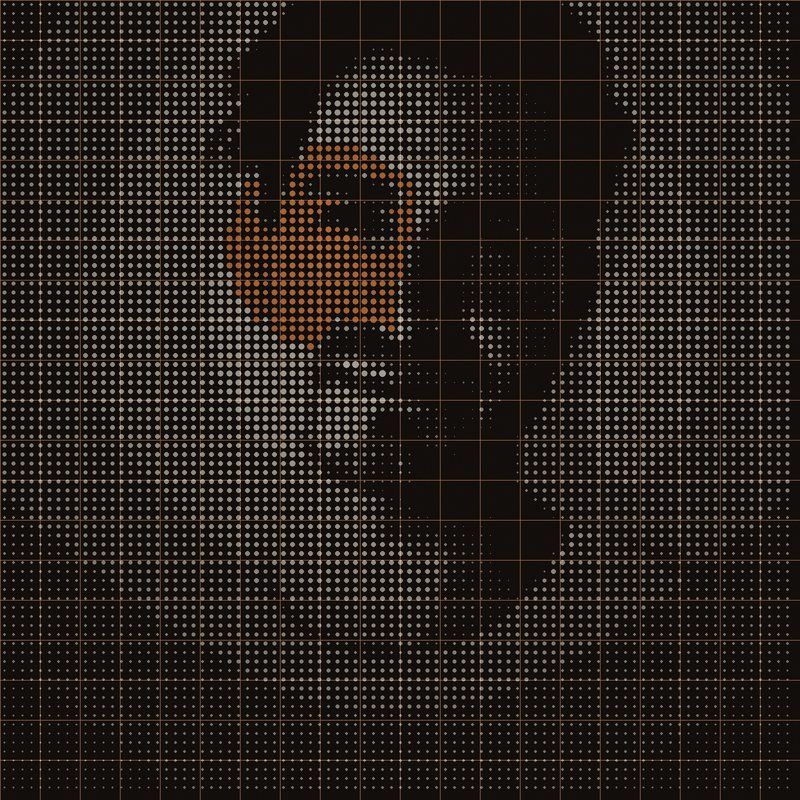

Shawn Adrian
Founder
Fourteen years building software products at Input Logic, an AI-native product lab shipping for brands like NYU, Netgear, and Consumer Reports. Built Harbour, the agent control platform that runs under every Agentic Standard deployment. Brings the engineering discipline that turns agentic AI from a concept into production infrastructure.
LinkedIn